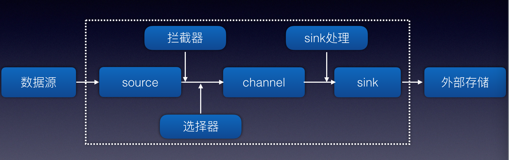
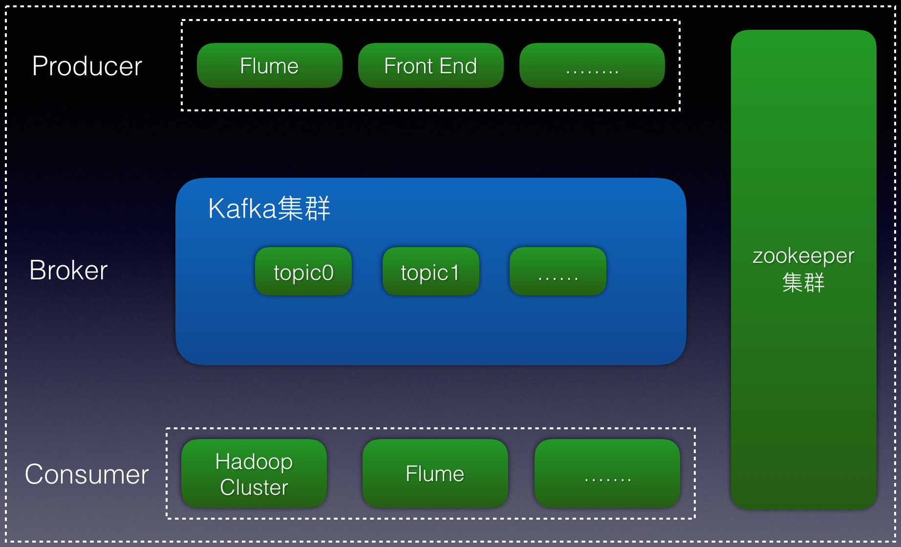
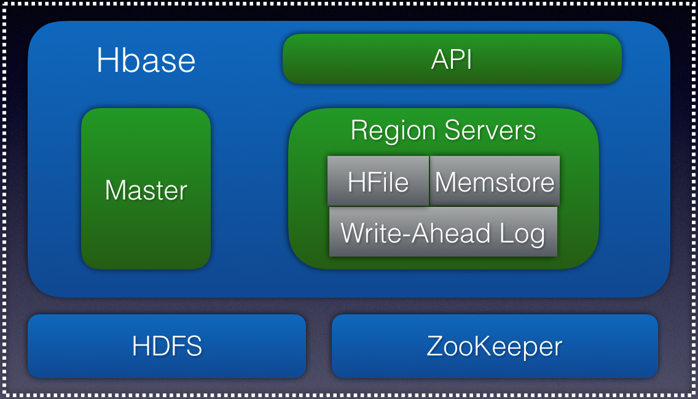
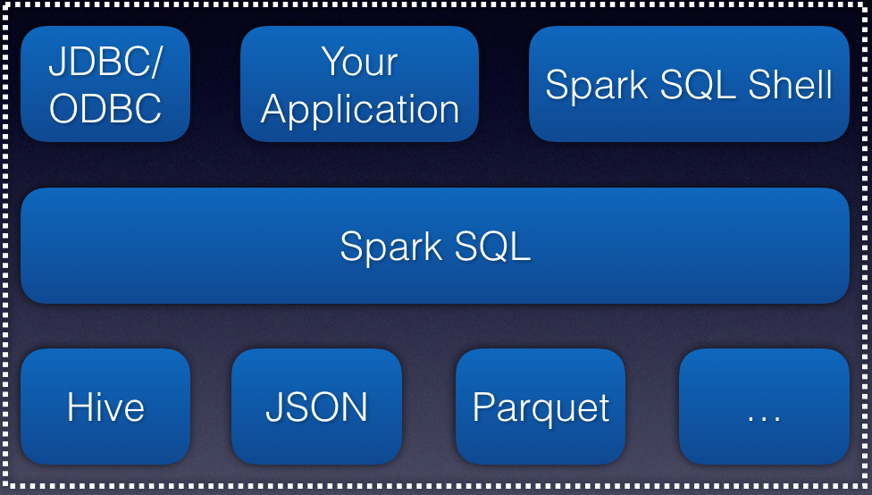
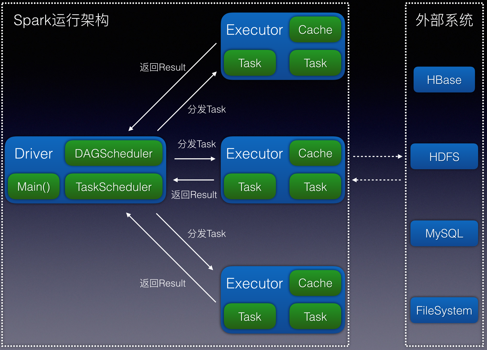

随着移动互联网、云计算、物联网的崛起与发展，大数据的时代已经来临。当数据量不停增长时，如何实时查询和分析业务的状况变的业务状况变的越来越重要。
本文主要包含以下几个方面：
- 数据采集
- 消息队列
- 数据存储
- 离线分析
当数据产生时，通过flume客户端去采集数据，然后放入kafka消息队列中，接着通过flume服务端去消费这个数据，最终把数据放入es、hbase、mongodb等数据库中。
1. 数据采集
Flume是一个分布式的、高可用的日志收集系统。Flume-NG采用三层架构设计：收集（source）、暂存（channel）、处理（sink）。如图所示：

1.1 source
source用来对接各种数据源，将收集到的数据存入channel中。
常用的source类型有Avro source、Exec source、Kafka source等。
Avro source通过监听Avro端口接收外部客服端流事件，在flume多层架构中常被用来接收上层agent sink发送的event。
Kafka source用来对接分布式消息队列kafka，作为kafka的消费者持续从kafka中拉取数据。
Exec source收集标准输出数据或者通过tail -f file的方式监听指定文件。但是不支持断点续传（不记录读取文件的位置）。
1.2 channel
channel为event中的缓冲区，存储source收集并且没有被sink读取的event，平衡source收集和sink读取数据的速度，相当于flume内部的消息队列。
常用的channel类型有memory channel、file channel、kafka channel。
memory channel读写速度快，但是存储小，flume进程挂掉时，数据会丢失。
file channel将event写入磁盘文件，存储大，无数据丢失风险。
kafka channel将kafka作为channel存储。kafka channel相对于memory channel和file channel存储容量大，容错能力强。在日志收集层，可以只配置source组件和kafka channel组件，不需要再配置sink组件，可以减少日志收集层启动的进程数并且有效降低服务器内存、磁盘等资源使用率。再日志汇聚层，可以只配置kafka channel和sink，不需要再配置source，减少日志汇聚层的进程数，这样能降低服务器的资源利用率和减少event再网络之间的传输，有效提高日志采集系统的性能。
1.3 sink
avro sink常用来对接下一层的avro source，通过发送rpc请求将event发送到下一层的avro source。
hdfs sink用来将event写入hdfs文件存储。
kafka sink将evnet写入到kafka主题中。
本文采用exec source作为source，channel采用file channel，sink采用kafka sink。这样可以采集不同的数据源，然后分发到不同的kafka topic中。
2. 消息队列
kafka是一个开源的分布式消息队列，具有高吞吐、可扩展、高可用的特性。

一个kafka集群可以有多个kafka实例，由zookeeper协调管理（保存kafka元数据、动态扩展、负载均衡）。一个kafka实例就是一个broker。broker中有包含topic，topic相当于一个数据库表，一个topic可以分为多个partition和多个replication。producer将同一类型的消息写入同一个topic中，consumer从同一个topic消费同一类型的数据。
kafka之所以能够实现高吞吐、可扩展、高可用，是因为它基于磁盘顺序读写（比内存读写性能还高），pagecache、sendfile技术（零拷贝）、多分区（一个分区代表一个线程）。
3. 数据存储
flume服务端通过消费kafka中的topic，把日志写入到各个数据库中。
3.1 HBase
HBase是一个分布式的、持久的、强一致性的存储系统，具有尽似最优的写性能和出色的读性能。HBase和传统型关系型数据库相比，就是使用了LSM树做为底层数据结构。LSM树以磁盘传输速率工作并能较好地扩展以处理大量的数据，它们使用日志文件和内存存储来将随机写转换成顺序写，因此也能保证稳定的数据插入速率。又由于读写独立，因此两种操作之间没有冲突。
Hbase中有3个主要组件：客户端库、一台主服务器和多台region服务器。region服务器可以根据负载的变化动态添加和移除。主服务器主要负责利用zookeeper为region服务器分配region。

主服务器不负责数据服务，只提供region管理和元数据的管理。region服务器提供读写服务。HBase主要处理两种文件，预写日志和实际的数据文件，两者由HRegionServer管理。
HBase中的行键设计非常重要，它是用来定位具体一行的数据的，通过行键的查询是最快的。但是如果按照特定序列来命名，容易造成region热点，在某一时间段数据全往一个region中写。一般通过加入salt或者哈希随机化来设计行键。但反过来，随机写带来的一个坏处是会造成顺序读的性能下降。
3.2 Hive
Hive是一个建立在Hadoop架构上的数据仓库。它能够提供数据的精炼，查询和分析。它可以将结构化的数据文件映射为一张数据库表，并提供sql查询功能。
Hive可以映射hdfs或者hbase来建立外表，然后通过hql语句来查询相应的数据。同时可以按天建立分区表，减少查询的数据量。值得注意的是，外表以及通过外表建立的分区表，在删表时并不会删除数据。
3.3 Elasticsearch
Elasticsearch是一款开源的、分布式的、restful风格的搜索引擎。它内部使用Lucene做索引与搜索。它有如下特点：
- 一个分布式的实时文档存储，每个字段可以被索引与搜索
- 一个分布式实时分析搜索引擎
- 能胜任上百个服务器节点的扩展，并支持PB级别的结构化或者非结构化的数据
4. 离线分析
Spark是一款开源的分布式大数据处理通用引擎，具有高吞吐、低延时、可扩展、高容错等特点。它包括离线计算、交互式查询、数据挖掘算法、流式计算及图计算。
Spark包含以下几个组件：
Apache Spark core
Apache Spark core是spark平台的核心组件，其他组件都依赖于它。它主要负责：
- 内存管理和故障恢复
- 在集群上安排、分布和监控作业
- 和存储系统进行交互
Spark SQL
Spark SQL是Spark Core之上的一个组件，它引入了一个称为SchemaRDD的新数据抽象，它为结构化和半结构化数据提供支持（Hive等）。

如果配置支持hive，当Spark SQL进行编程或者查询时，可以使用HiveSQL作为查询语言。
Spark Streaming
Spark Streaming利用Spark Core的快速调度功能来执行流式分析。它以小批量获取数据，并对这些小批量的数据执行RDD（弹性分布式数据集）转换。
MLib
MLlib是Spark之上的分布式机器学习框架，因为基于分布式内存的Spark架构。根据基准，它是由MLlib开发人员针对交替最小二乘法（ALS）实现完成的。 Spark MLlib是基于Hadoop磁盘的Apache Mahout版本的9倍（在Mahout获得了Spark接口之前）。
GraphX
GraphX是Spark上的一个分布式图形处理框架。它提供了一个用于表达图形计算的API，可以通过使用Pregel抽象API为用户定义的图形建模。它还为此抽象提供了一个优化的运行时。
相对于Hadoop，spark采用了DAG执行引擎，支持循环数据流和内存计算，在内存中的速度是hadoop的100倍，磁盘上的速度是hadoop的10倍。
Spark实现了DAG的计算模型，DAG计算模型是指将一个任务按照计算规则分解为若干子任务，这些子任务之间根据逻辑关系构建有向无环图。

Spark计算操作都是基于RDD进行的。RDD具体只读、多分区、分布式的特性。外部的文件系统的文件如hbase，hdfs都可以转换为RDD。同时一个或者多个RDD可以转换为新的RDD。
RDD提供Transformation和Action两种计算类型。Transformation的操作只有当Action的时候才会真正的执行操作。同时RDD可以缓存到内存或者磁盘中，这样可以减少网络传输次数，提高spark的计算性能。